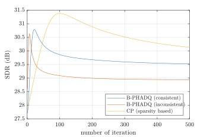
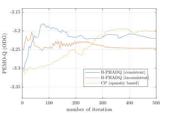
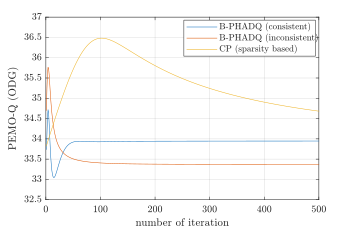
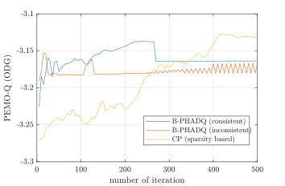
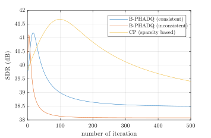
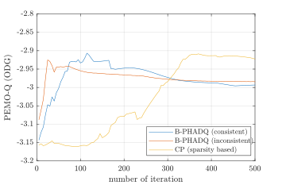

This is the accompanying page for the article Audio dequantization using instantaneous frequency authored by Vojtěch Kovanda and Pavel Rajmic.
We present a dequantization method that employs a phase-aware regularizer, originally successfully applied in an audio inpainting problem. The method maintains the temporal continuity of sinusoidal components in the audio signal time-frequency representation and avoids the energy loss artifacts commonly encountered with l1-based regularization approaches. The proposed method is called the Phase-Aware Audio Dequantizer (PHADQ). The methods are evaluated using the objective metric SDR and PEMO-Q ODG.
You can listen to the EBU SQAM violin audio excerpt. Other examples can be generated by running the available Matlab code. B-PHADQ (consistent/inconsistent) excerpts are generated using 60 algorithm iterations.
| Original audio | > | ||
6 bps |
7 bps |
8 bps |
|
| Quantized audio (quantized) | |||
| Reconst. via the CP algorithm, (CP (sparsity-based)) | |||
| Consistent variant of B-PHADQ (B-PHADQ (consistent)) | |||
| Inconsistent variant of B-PHADQ (B-PHADQ (inconsistent)) |
6 bps |
7 bps |
8 bps |
|


|


|


|